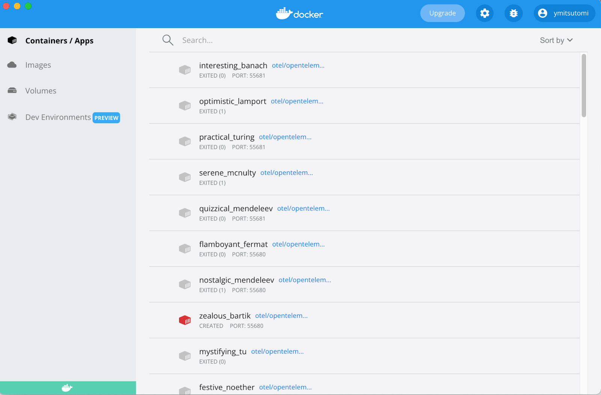
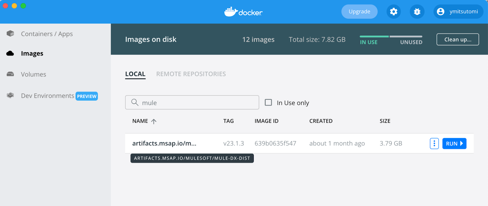
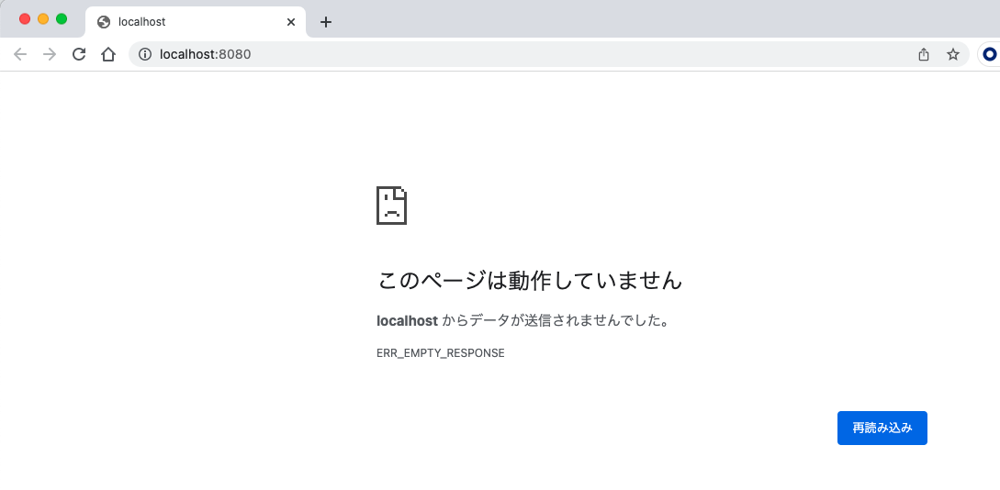
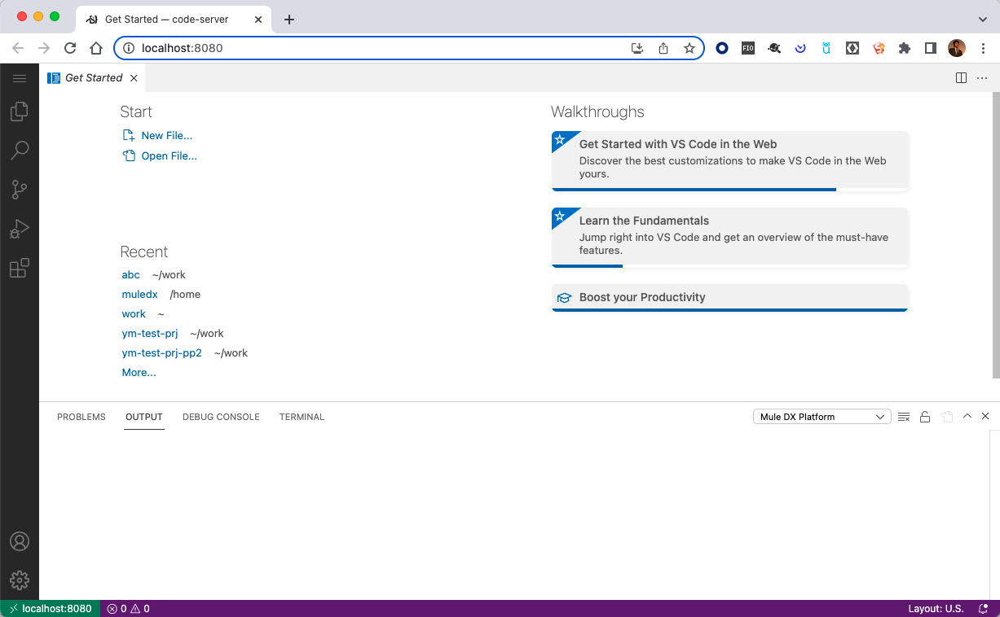
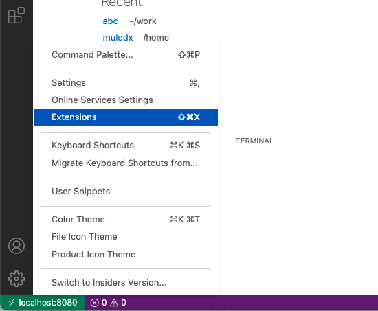
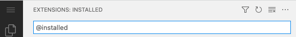
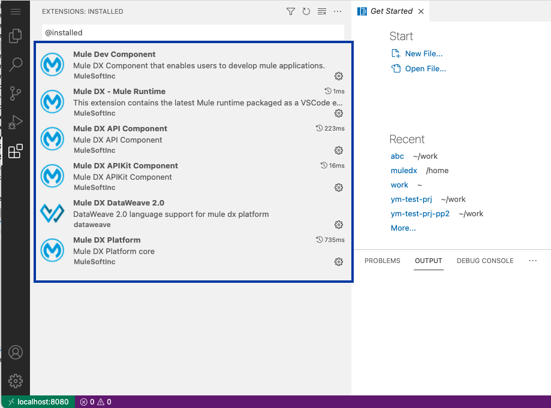

Welcome to Anypoint Code Builder (aka Pink Panther) developers preview walkthrough! Anypoint Code Builder is the next generation IDE for MuleSoft Application and API Specification. The IDE is developed on top of one of the most used IDEs among developers, VS Code. Anypoint Code Builder developers preview is now available to those participating in the testing.
In this section, we will set up Anypoint Code Builder developers preview for following codelabs.
In this section, we'll download the docker image for Anypoint Code Builder and load it on your environment.
Download the image from here.
Image for docker desktop for Mac.

Run docker version command to print the version of your docker server engine.
Sample output(version number should vary by the installation):
$ docker version
Client:
Cloud integration: v1.0.22
Version: 20.10.13
API version: 1.41
Go version: go1.16.15
Git commit: a224086
Built: Thu Mar 10 14:08:44 2022
OS/Arch: darwin/amd64
Context: default
Experimental: true
Server: Docker Desktop 4.6.1 (76265)
Engine:
Version: 20.10.13
API version: 1.41 (minimum version 1.12)
Go version: go1.16.15
Git commit: 906f57f
Built: Thu Mar 10 14:06:05 2022
OS/Arch: linux/amd64
Experimental: false
containerd:
Version: 1.5.10
GitCommit: 2a1d4dbdb2a1030dc5b01e96fb110a9d9f150ecc
runc:
Version: 1.0.3
GitCommit: v1.0.3-0-gf46b6ba
docker-init:
Version: 0.19.0
GitCommit: de40ad0
$Use cd command to change the current directory.
Hit the command following to unzip the image and load it to your docker(Note: the version may differ if you download the newer image.):
$ gunzip -c ~/Downloads/mule-dx-dist-v23.1.3.tar.gz | docker loadWhen installation is successfully completed, you can verify it on your docker desktop like below:

Hit the command below. It run the docker image you installed in the previous section. Then it opens up your browser at http://localhost:8080
$ docker run -i --rm --name mule-dx -d -p8080-8100:8080-8100 -v $HOME:$HOME artifacts.msap.io/mulesoft/mule-dx-dist:v23.1.3 && sleep 3 && open http://localhost:8080You may see a blank page like below. But don't be freaked. It may take a couple minutes to boot up.

When it successfully starts up, you will see Visual Studio code window like below:

Hit Shift + Command + X key or navigate to Configuration > Extensions

Hit @installed at the search bar

Mule related extensions are listed like below:

If you want to pause the lab here, you can stop Anypoint Code Builder by following command(If you are ready to proceed the next lab, keep the image running!):
$ docker stop mule-dxIn this lab, we have done followings:
Congratulations! Now you are ready to explore Anypoint Code Builder Developers Preview.
Head to Codelab 1 - Designing APIs with Anypoint Code Builder